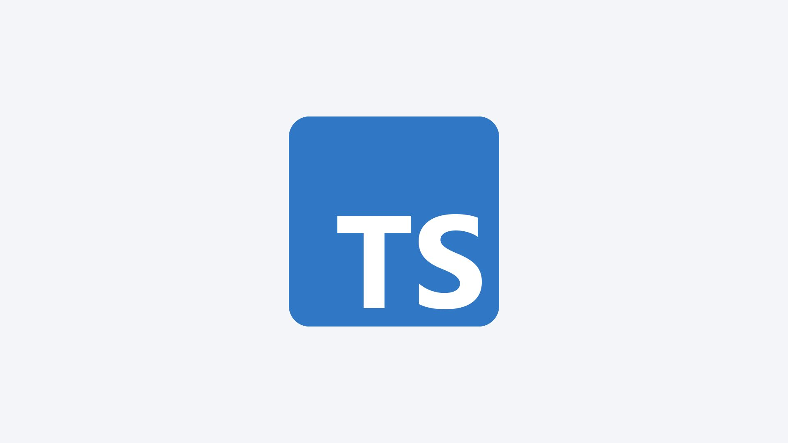

During my co-op term as an IT DevOps and Cloud Programmer at Perimeter Institute, I engaged in various web and full-stack development projects that significantly contributed to the enhancement and optimization of systems. I worked closely with cross-functional teams, applying my technical skills and effective communication abilities to tackle complex challenges and drive impactful results.
Key Responsibilities
Web and Full-Stack Development: I leveraged my expertise in TypeScript, GraphQL, React.js, and Node.js to develop and improve web applications. Notably, I created a custom subtitle and transcription editor using React.js, HTML, CSS, and JavaScript, which greatly streamlined the editing process for AI-generated subtitles. Additionally, I played a key role in developing a dashboard that provided valuable insights into student and course data for professors and faculty.
Optimization and Efficiency: I wrote and executed Node.js scripts to optimize Thinkific enrollments, which resulted in a significant 46% reduction in monthly expenditures. This achievement highlighted my ability to enhance system processes and improve overall efficiency.
Custom Solutions Development: I designed and built custom tools that addressed specific needs, such as the subtitle and transcription editor. My work involved using React.js, HTML, CSS, and JavaScript to create solutions that improved user experiences and operational efficiency.
Dashboard Creation: I contributed to the development of a dashboard that delivered crucial insights into student and course data. This project was aimed at providing professors and faculty with valuable information to support their academic responsibilities.
Stakeholder Communication: I conducted stakeholder demos, effectively communicating technical details and project progress. This experience honed my ability to convey complex information clearly and ensure alignment with project goals and expectations.
Skills and Qualifications
In my role, I demonstrated strong technical proficiency by utilizing TypeScript, GraphQL, React.js, and Node.js in various projects, effectively showcasing my skills in these technologies. I also developed a solid understanding of HTML, CSS, and JavaScript, which I used to build custom applications and tools. My experience with version control systems such as Git and GitHub, along with integrating systems via web APIs, further highlighted my technical capabilities. My hands-on development experience included working on web and full-stack projects, where I successfully built and enhanced applications to meet specific user needs and improve system functionalities. Collaboration and communication were key aspects of my role; I worked effectively with team members and communicated technical details clearly during stakeholder demos, ensuring that projects were executed successfully and aligned with goals. I excelled in problem-solving and efficiency, identifying and implementing optimizations that notably improved system performance and achieved cost savings. As a, then, 3rd-year co-op student in Computer Science, I leveraged my strong programming skills and academic background to contribute meaningfully to projects, demonstrating excellent time management and focus to handle multiple tasks and deliver high-quality results throughout my term. These have since improved after the work term.